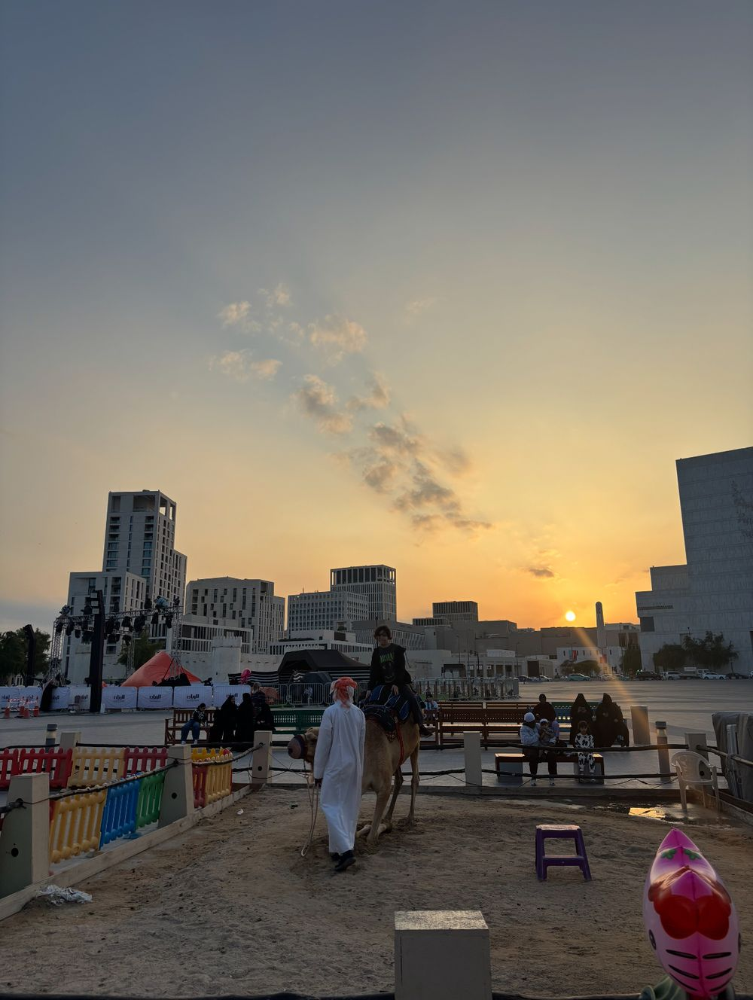

Room 03 · Pre-dawn
The Compass
An assistant at the long table that never speaks first, shows its reasoning, and accepts no. It points. You walk.
Three promises
Faithful to your will means you set the heading.
- It never speaks first.It answers when you ask.
- It shows its working.Every suggestion can say why, and what it is unsure of.
- It can be told no.Rejected means gone for the night, with no argument.
Try it
> Heading set: Finish the pitch deck

The night ends. The direction is still mine.
A good tool makes you faster and leaves you in charge. If it ever feels like it is steering, you can close the door.